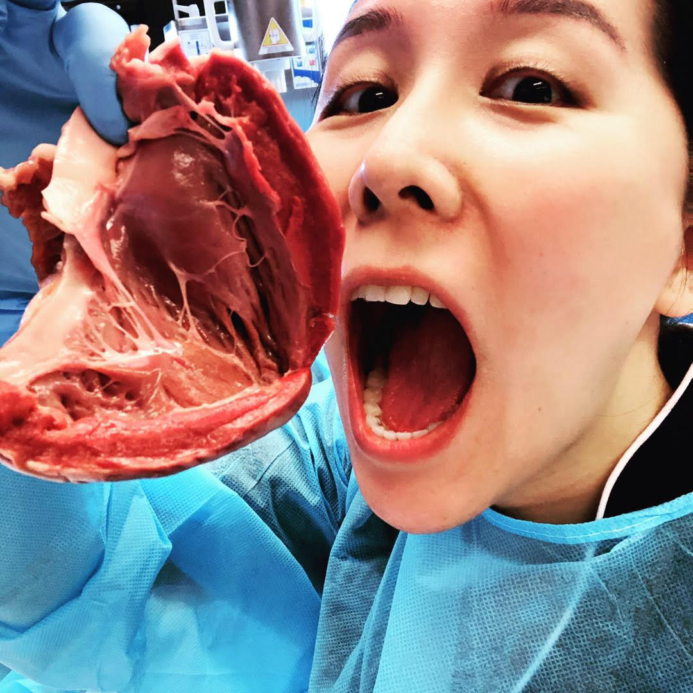

Han Liu - s3749984

My name is Han Liu, my student ID is s3749984 and our team's name is C-sharp. I am an Asian background lady who has Bilingual communication skills in Chinese Mandarin and English. I live in Melbourne, I am studying full-time and work part-time as a Sushi Artisan. I completed my Year 12 in China, in 2008 then I came to Australia in the same year. I started to have some English classes and then work for life. I have done Certificate III in Children Services in 2013 at Victoria University, Certificate IV in Health Science Foundations at Victoria University in 2016. Diploma of Nursing and two units of bachelor IT at RMIT for now. I enjoy the gym and cooking when I am free. Our society development is getting faster and faster. We use technology for everything in our daily life. I have zero experience in the IT field, but my partner is an IT profession. He explained to me how amazing IT is and what kind of job he does. I can see his passion and he sparked my interest as well. I want to do something to help people with IT technology too. That is the reason why I study IT.
Link to Han's assignment 1 website:
HERETest Results:
Personality Type:

Learning Style:

Big five: